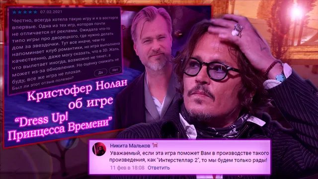
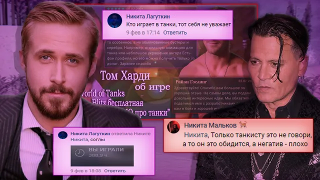

Ваши комментарии
ВКонтакте
🌠 Вечер добрый, дорогие, пришло время демонстарции выставки иллюстраций лучших к…
14 февраля 2021 · оригинал во ВКонтакте ↗



🌠 Вечер добрый, дорогие, пришло время демонстарции выставки иллюстраций лучших комментариев за неделю, желаем славного созерцания!
🏆Титул [https://vk.com/@criticssteam-sistema-titulov?ref=group_block|Комментатора] сегодня получают:
🌟 [id156445910|Никита Мальков]
🌟 [id467488979|Савва Герасимов]
🌟 [id284440935|Никита Лагуткин]
⭐ [id315689770|Евгений Пышненко]
===========================
>Всем спасибо, пишите больше!
#ВашиКомментарии@criticssteam - №31
> Предыдущий выпуск - [https://vk.com/wall-196461758?q=%23ВашиКомментарии&w=wall-196461758_3462|здесь]!
🏆Титул [https://vk.com/@criticssteam-sistema-titulov?ref=group_block|Комментатора] сегодня получают:
🌟 [id156445910|Никита Мальков]
🌟 [id467488979|Савва Герасимов]
🌟 [id284440935|Никита Лагуткин]
⭐ [id315689770|Евгений Пышненко]
===========================
>Всем спасибо, пишите больше!
#ВашиКомментарии@criticssteam - №31
> Предыдущий выпуск - [https://vk.com/wall-196461758?q=%23ВашиКомментарии&w=wall-196461758_3462|здесь]!